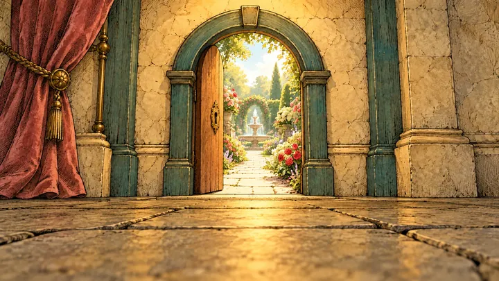
Episódio 1Episode 1
A Toca do CoelhoDown the Rabbit-Hole
Siga o Coelho Branco, caia pela toca e descubra como passar pela portinha.
Follow the White Rabbit, fall down the hole and find a way through the tiny door.
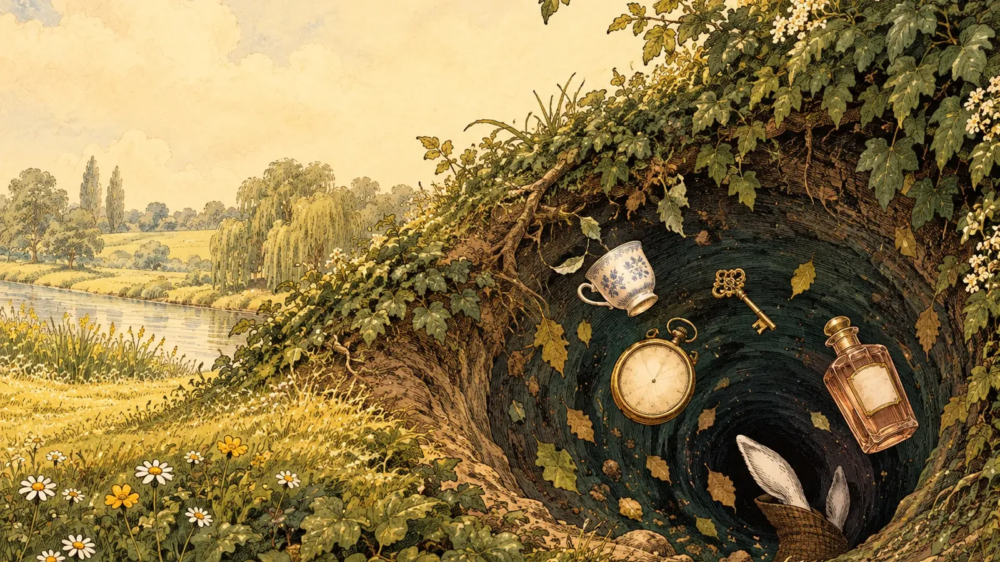
Um jogo gratuito para toda a famíliaA free game for the whole family
Siga o Coelho Branco pela toca e viva o livro de Lewis Carroll em onze episódios: quebra-cabeças, conversas malucas e brincadeiras, do Salão das Portas ao julgamento das tortas.
Follow the White Rabbit down the hole and live Lewis Carroll's book in eleven episodes: puzzles, mad conversations and games, from the Hall of Doors to the trial of the tarts.
A históriaThe story
Numa tarde de verão, Alice está sentada na beira do rio com a irmã quando passa correndo um Coelho Branco de colete, olhando o relógio. Ela vai atrás dele, cai na toca e começa a aventura mais curiosa da sua vida.
One summer afternoon, Alice is sitting by the river with her sister when a White Rabbit in a waistcoat runs past, looking at his watch. She follows him, tumbles down the hole, and begins the most curious adventure of her life.
O jogo segue o livro capítulo por capítulo. Cada episódio mistura cenas para explorar com o mouse ou com o dedo, conversas em que você escolhe o que a Alice diz, e brincadeiras rápidas, sempre com um treino livre antes de valer.
The game follows the book chapter by chapter. Each episode mixes scenes to explore with a mouse or a finger, conversations where you choose what Alice says, and quick games, always with free practice before they count.
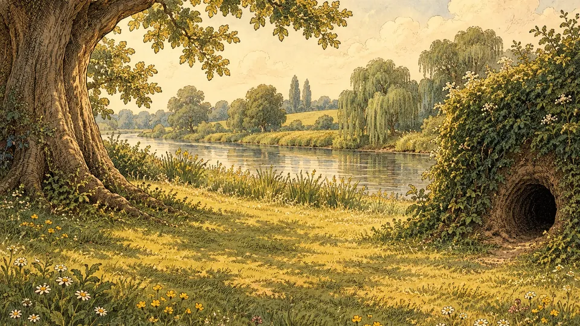
Onze episódios, onze cartasEleven episodes, eleven cards
Um capítulo do livro em cada episódio, do primeiro ao último. Dá para começar por qualquer um. As cartas vão do Ás ao Valete de Copas, o acusado do julgamento final.
One chapter of the book in each episode, from the first to the last. You can start with any of them. The cards run from the Ace to the Knave of Hearts, who stands trial at the end.

Episódio 1Episode 1
Siga o Coelho Branco, caia pela toca e descubra como passar pela portinha.
Follow the White Rabbit, fall down the hole and find a way through the tiny door.
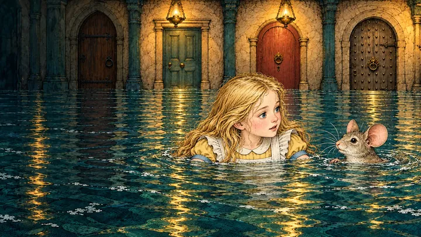
Episódio 2Episode 2
Nade no salão inundado, acalme o Rato e corra a Corrida em Roda.
Swim through the flooded hall, calm the Mouse and run the Caucus-race.
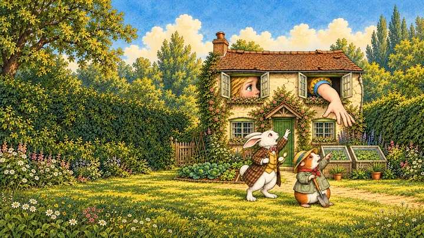
Episódio 3Episode 3
Cresça até não caber na casa, escape do Pat e do Bill e brinque com um cachorrinho gigante.
Grow too big for the house, escape Pat and Bill and play with a giant puppy.
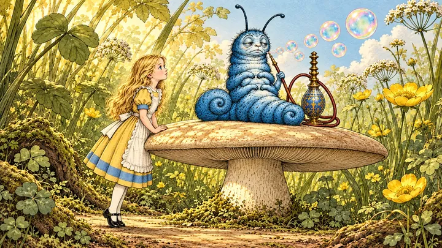
Episódio 4Episode 4
Os dois lados do cogumelo, os truques do Pai Guilherme e um pescoço comprido demais.
The two sides of the mushroom, Father William's tricks and a neck that is far too long.
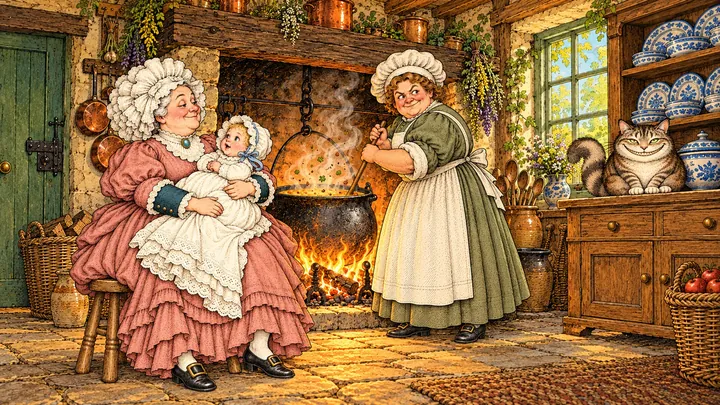
Episódio 5Episode 5
A cozinha da Duquesa, um bebê que vira porquinho e o Gato de Cheshire, que aparece e some.
The Duchess's kitchen, a baby that turns into a pig, and the Cheshire Cat, who comes and goes.
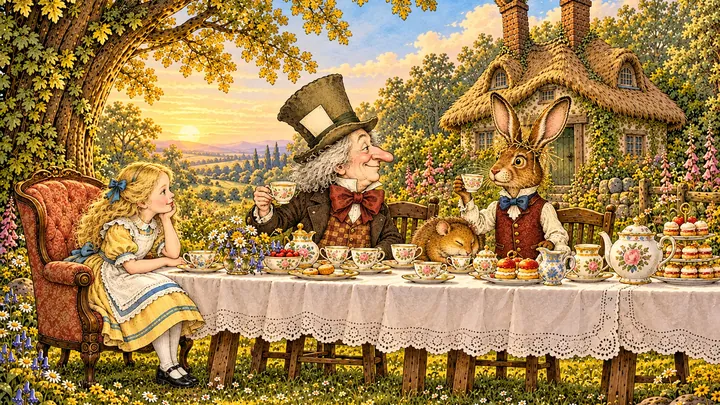
Episódio 6Episode 6
Chá com o Chapeleiro, a Lebre de Março e o Arganaz, que vive pegando no sono.
Tea with the Hatter, the March Hare and the Dormouse, who keeps falling asleep.
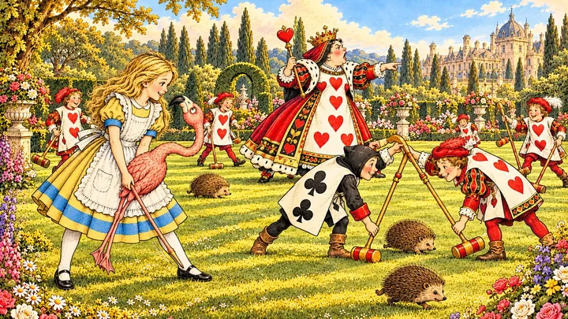
Episódio 7Episode 7
Pinte as rosas de vermelho antes que a Rainha chegue e jogue croqué com flamingos e ouriços.
Paint the roses red before the Queen arrives, and play croquet with flamingos and hedgehogs.
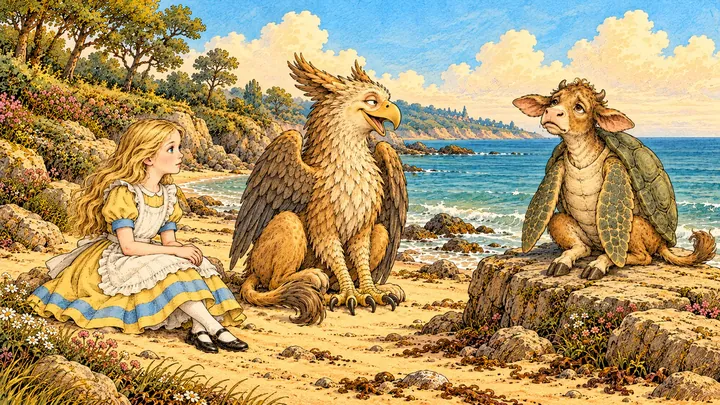
Episódio 8Episode 8
O queixo pontudo da Duquesa, os perdões do Rei e a escola do fundo do mar.
The Duchess's sharp chin, the King's pardons and the school at the bottom of the sea.
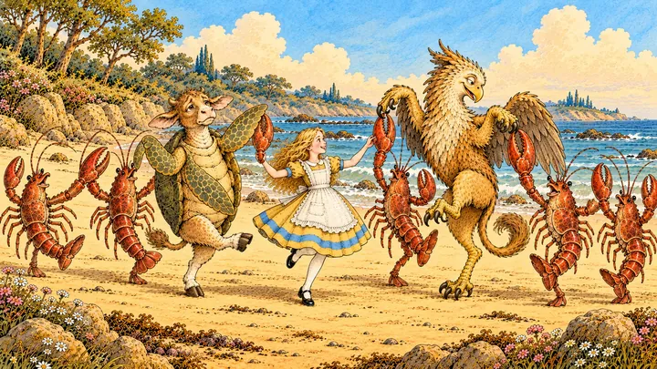
Episódio 9Episode 9
Dance na praia, nade atrás das lagostas e encontre as rimas de um poema atrapalhado.
Dance on the beach, swim after the lobsters and find the rhymes in a muddled poem.
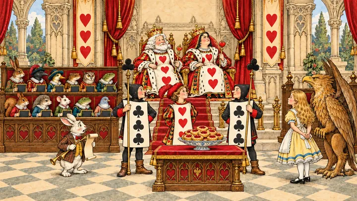
Episódio 10Episode 10
O julgamento do Valete, o Chapeleiro nervoso e uma torta de verdade, sem pimenta.
The Knave's trial, the nervous Hatter and a proper tart, with no pepper.
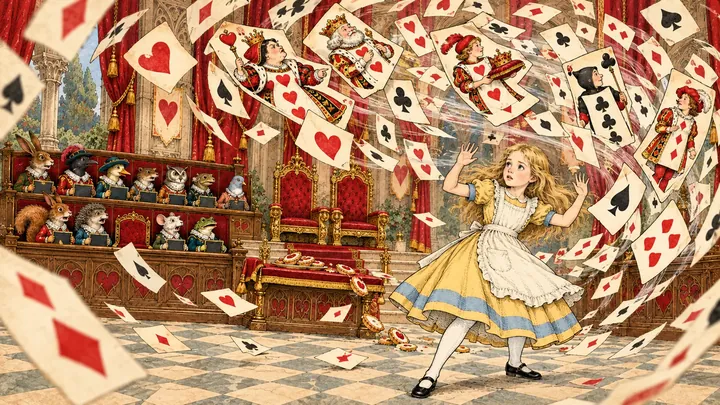
Episódio 11Episode 11
O júri de volta no lugar, o baralho inteiro voando e o despertar na beira do rio.
The jury back in place, a whole pack of cards in the air, and waking up by the river.
Quem é quemWho's who
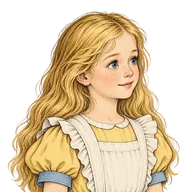
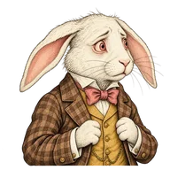
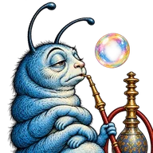
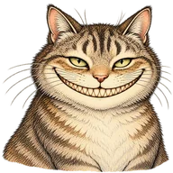
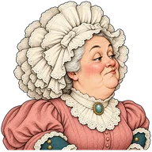
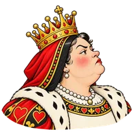
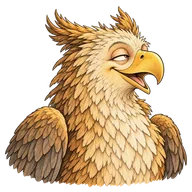
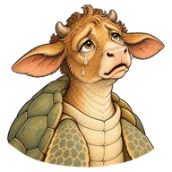
Do jogoFrom the game
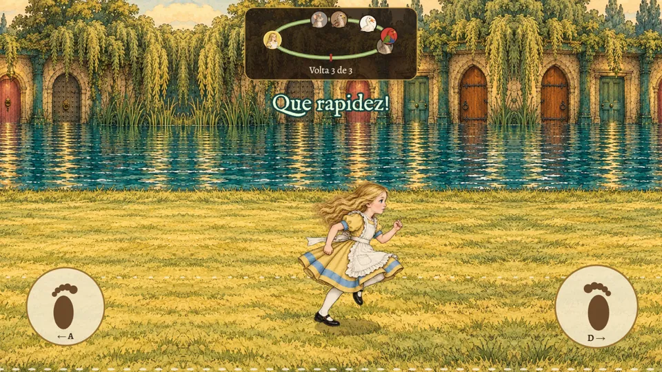
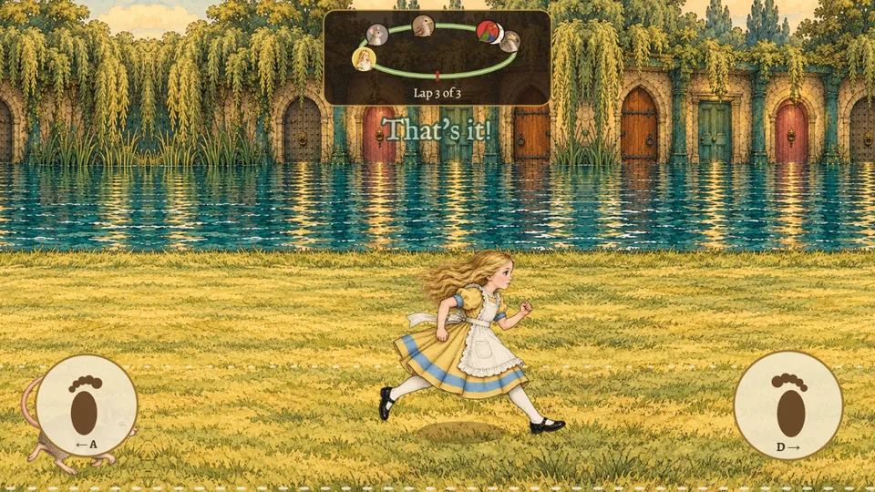
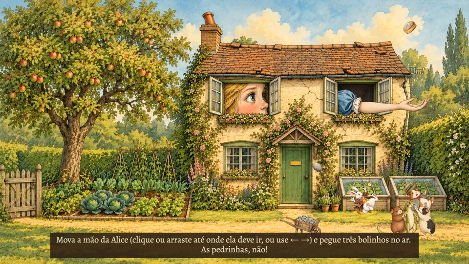
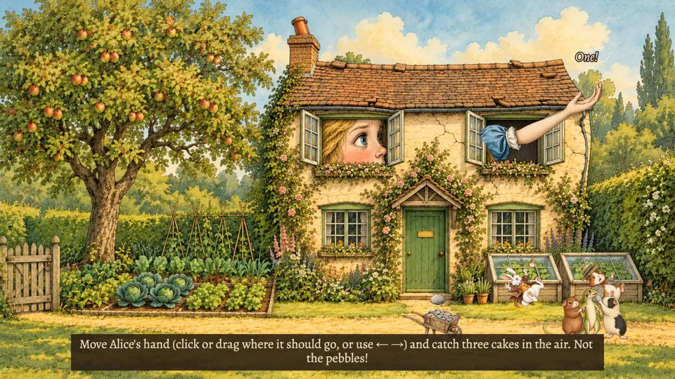
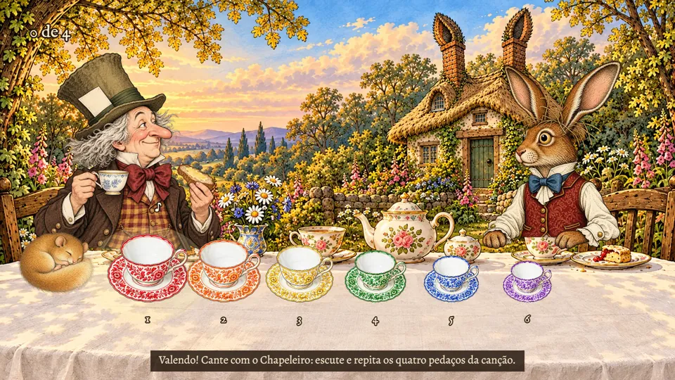
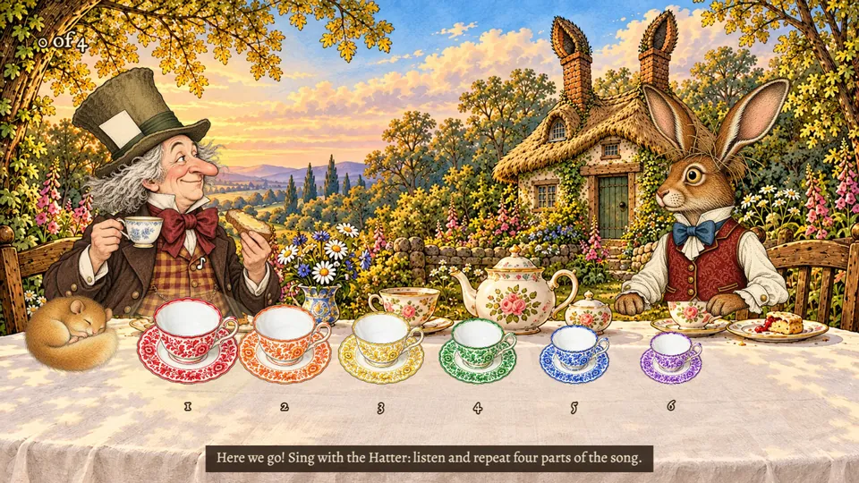
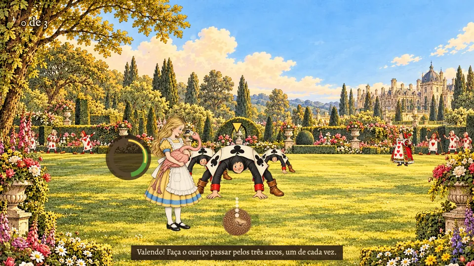
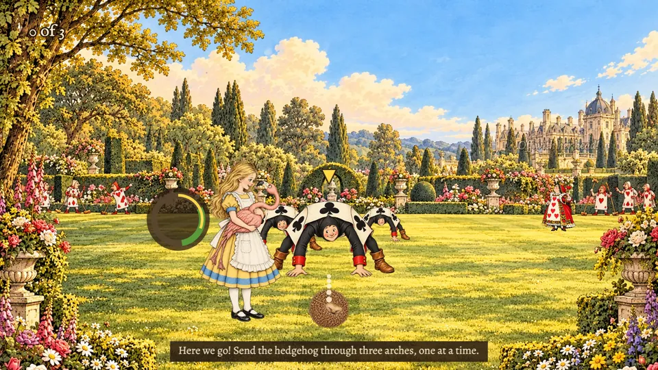
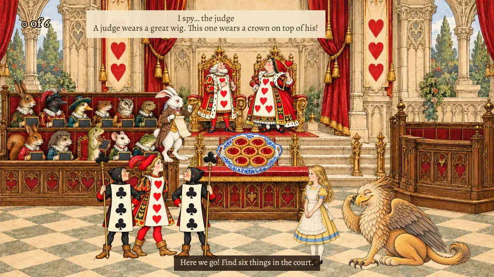
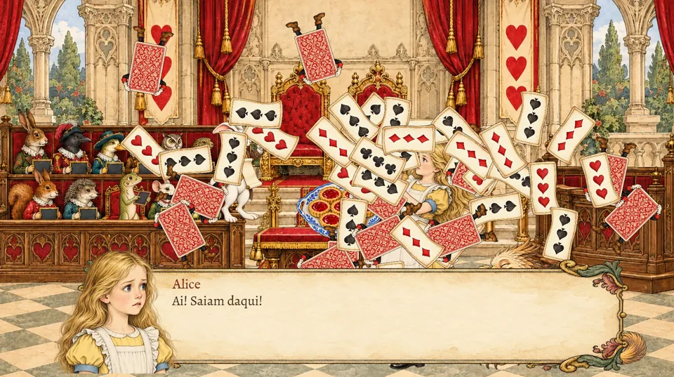
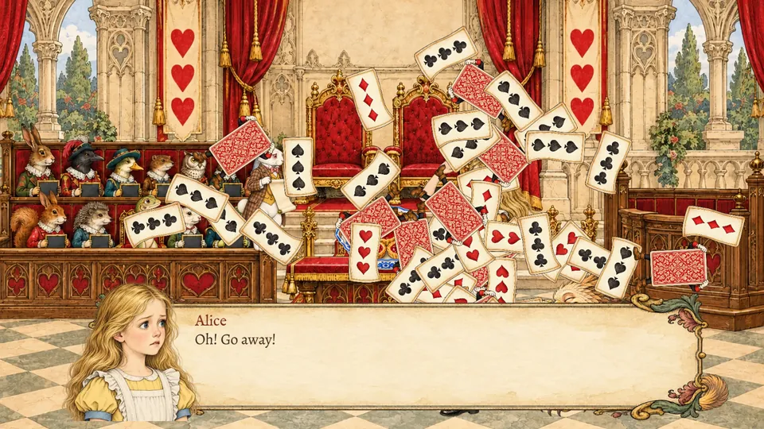
Para as famíliasFor families
O livroThe book
Alice's Adventures in Wonderland foi escrito por Lewis Carroll e publicado em 1865, com ilustrações de John Tenniel. Hoje é uma obra de domínio público.
Alice's Adventures in Wonderland was written by Lewis Carroll and published in 1865, with illustrations by John Tenniel. It is now in the public domain.
Este jogo é uma adaptação livre, com a arte inspirada nas ilustrações originais. Os poemas e trocadilhos ganharam versões novas em português.
This game is a free adaptation, with art inspired by the original illustrations.
Duas maneirasTwo ways
No computador, no tablet ou no celular, sem instalar nada. No celular, vire a tela de lado.
On a computer, a tablet or a phone, with nothing to install. On a phone, turn it sideways.
Cada episódio baixa as suas imagens e sons quando é escolhido, por isso precisa de internet.
Each episode downloads its pictures and sounds when you choose it, so it needs an internet connection.
Depois de baixado, joga sem internet. Se aparecer “O Windows protegeu o computador”, clique em Mais informações e depois em Executar assim mesmo: o aviso aparece porque o jogo é gratuito e não tem assinatura paga.
Once downloaded, it plays offline. If “Windows protected your PC” appears, click More info and then Run anyway: the warning shows because the game is free and has no paid signature.
Quem fezWho made it